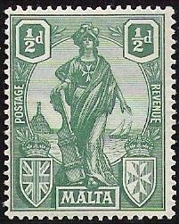
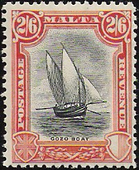
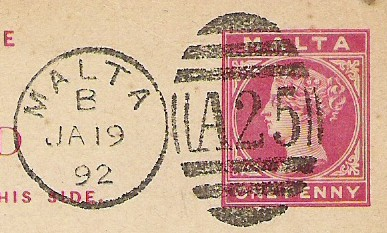

Return To Catalogue - 1903-1920 issues - 1860-1902 issues
Note: on my website many of the
pictures can not be seen! They are of course present in the
catalogue;
contact me if you want to purchase it.
For stamps of Malta issued before 1920, click here.

1/4 p brown 1/2 p green 1 p orange and lilac 1 p violet 1 1/2 p brown 2 p olive and blue 2 1/2 p blue 3 p blue 3 p black on yellow 4 p yellow and blue 6 p olive and violet 1 Sh brown and blue 2 Sh blue and brown 2 Sh 6 p black and lilac 5 Sh blue and orange 10 Sh brown and grey 1 Pound red and black Surcharged
(Image obtained thanks to Emmanuel Cesare, the surcharge can be
found relatively high up the stamp to more towards the bottom of
the stamp)
'Two pence halfpenny' on 3 p blue (3-Dec-1925) Overprinted 'POSTAGE' (1-April-1926)
1/4 p brown 1/2 p green 1 p violet 1 1/2 p brown 2 p olive and blue 2 1/2 p blue 3 p black on yellow 4 p yellow and blue 6 p olive and violet 1 Sh brown and blue 2 Sh blue and brown 2 Sh 6 p black and lilac 5 Sh blue and orange 10 Sh brown and grey
I have seen a picture of a forged inverted 'POSTAGE' overprint on a 3 p stamp:
(Forged inverted overprint, image obtained thanks to Emmanuel
Cesare)
Inscription 'POSTAGE'
1/4 p brown 1/2 p green 1 p red 1 1/2 p brown 2 p grey 2 1/2 p blue 3 p lilac 4 p red and black 4 1/2 p yellow and violet 6 p red and violet Inscription 'POSTAGE & REVENUE' (30-Oct-1930)
(Images obtained thanks to Emmanuel Cesare)
1/4 p brown 1/2 p green 1 p brown 1 1/2 p red 2 p grey 2 1/2 p blue 3 p lilac 4 p red and black 4 1/2 p yellow and violet 6 p red and violet Overprinted 'AIR MAIL'(1928)
6 p red and violet Overprinted 'POSTAGE AND REVENUE' (1-Oct-1928)
(Image obtained thanks to Emmanuel Cesare)
1/4 p brown 1/2 p green 1 p red 1 p brown 1 1/2 p brown 1 1/2 p red 2 p grey 2 1/2 p blue 3 p lilac 4 p red and black 4 1/2 p yellow and violet 6 p red and violet

1 Sh black 1 Sh 6 p green 2 Sh violet 2 Sh 6 p red 3 Sh blue 5 Sh green 10 Sh red Overprinted 'POSTAGE AND REVENUE' in red (1928)
(Images obtained thanks to Emmanuel Cesare)
1 Sh black 1 Sh 6 p green 2 Sh violet 2 Sh 6 p red 3 Sh blue 5 Sh green 10 Sh red
Windsor Castle, in this design were issued: 1/2 p green and black, 2 1/2 p blue and brown, 6 p green and blue and 1 Sh lilac and black. The design is identical to many other British colonies. For more information on these stamps, but for other British colonies, click here
For stamps in the same design, but for another British colony, click here
The values 1/2 p green, 1 1/2 p red and 2 1/2 p blue were issued (design identical to that of many other British colonies).
Previous design of the 1/4 p value, but with the emblem of King
George Vi in the upper right hand corner and inscription 'GRAND
HARBOUR' added in the upper left part.
This stamp exists with diagonal overprint 'SELF-GOVERNMENT 1947' (issued in 1948).
1/2 p green (H.M.S. St. Angelo), 1/2 p brown
(H.M.S. St. Angelo), 1 p green (Verdala Palace), 1 p brown
(Verdala Palace), 1 1/2 p red (neolithic hypogeum), 1 1/2 p black
(neolithic hypogeum), 2 p red (Victoria and the citadel, Gozo), 2
p blue (Victoria and the citadel, Gozo), 2 1/2 p blue (De L'Isle
Adam entering Mdina), 2 1/2 p lilac (De L'Isle Adam entering
Mdina), 3 p violet (St.John's co-cathedral), 3 p blue (St.John's
co-cathedral), 4 1/2 p orange and black (Mnajdra Temple), 6 p red
and green (Grand Master Mandel de Vilhena statue), 1 Sh black
(Maltese girl), 1 Sh 6 p olive and black (S.Publius Primus
Episcopus Melitae), 2 Sh blue and green (Mdina), 2 Sh 6 p red and
black (statue of Neptune), 5 Sh green and black (Palace Square),
10 Sh red and black (St. Paul).
These stamps exist with diagonal overprint 'SELF-GOVERNMENT 1947'
reading upwards or downwards (issued in 1948, also in some new
colours) on: 1/2 p brown, 1 p green, 1 p grey (red overprint), 1
1/2 p black (red overprint), 1 1/2 p green, 2 p red, 2 p orange,
2 1/2 p violet (red overprint), 2 1/2 p red, 3 p blue (red
overprint), 3 p violet (red overprint), 4 1/2 p orange and black,
4 1/2 p blue and black (red overprint), 6 p, 1 Sh, 1 Sh 6 p, 2 Sh
(red overprint), 2 Sh 6 p, 5 Sh (red overprint), 10 Sh.
For stamps in a similar design, but for another British colony, click here
1 p green 3 p blue
For stamps in a similar design, but for another British colony, click here
1 p green (smaller size) 1 Pound grey
For stamps in a similar design, but for another British colony, click here
2 1/2 p violet, 3 p blue, 6 p red and 1 Sh green.
1 p green, 3 p blue, 1 Sh grey
1 p green, 3 p violet, 1 Sh grey.
For stamps in a similar design, but for other British colonies, click here
1 1/2 p green and black
3 p violet.
1 1/2 p green, 3 p blue, 1 Sh grey.
1/4 p violet (monument of the great siege 1565), 1/2 p orange (Wignacourt acqueduct horsethrough), 1 p balck (victory church), 1 1/2 p green (war memorial), 2 p brown (Mosta dome), 2 1/2 p brown (auberge de Castile), 3 p red (King's scroll), 4 1/2 p blue, 6 p black (neolithic temples at Tarxien), 8 p olive (Vedette), 1 Sh violet (Mdina Gate), 1 Sh 6 p blue (les Gavroches), 2 Sh olive (monument of Christ the King), 2 Sh 6 p red (monument of G.M.Cottoner), 5 Sh green (momument of G.M.Perellos), 10 Sh red (St.Paul), 1 Pound brown (baptism of Christ).
For stamps in a similar design, but for another British colony, click here
2 p black and red 1 Sh 6 p blue and red
Postage due stamps were first issued on 16-April-1925 (simple design with inscription 'POSTAGE DUE MALTA', in the values 1/2 p, 1 p, 1 1/2 p, 3 p, 2 1/2 p all black on white, 3 p black on grey, 4 p, 6 p, 1 Sh and 1 Sh 6 p, all in colour black on yellow). Examples of such stamps:
These stamps also exist printed tete-beche. I've seen forgeries of a 2 1/2 p value error ('2 of '1/2' missing) together with a normal stamp.
A new set was issued in the same year (21-July-1925), with a maltese cross and incsription 'MALTA POSTAGE DUE' (values 1/2 p green, 1 p violet, 1 1/2 p brown, 2 p grey, 2 1/2 p orange, 3 p blue, 4 p green and 6 p lilac).
1/2 p green
(Image obtained thanks to Emmanuel Cesare)

I've seen similar postal stationary with the image of King Edward VII in the values 1/2 p green and 1 p red.
2 p blue
(Reduced size)
{kind=link}
{kind=link}